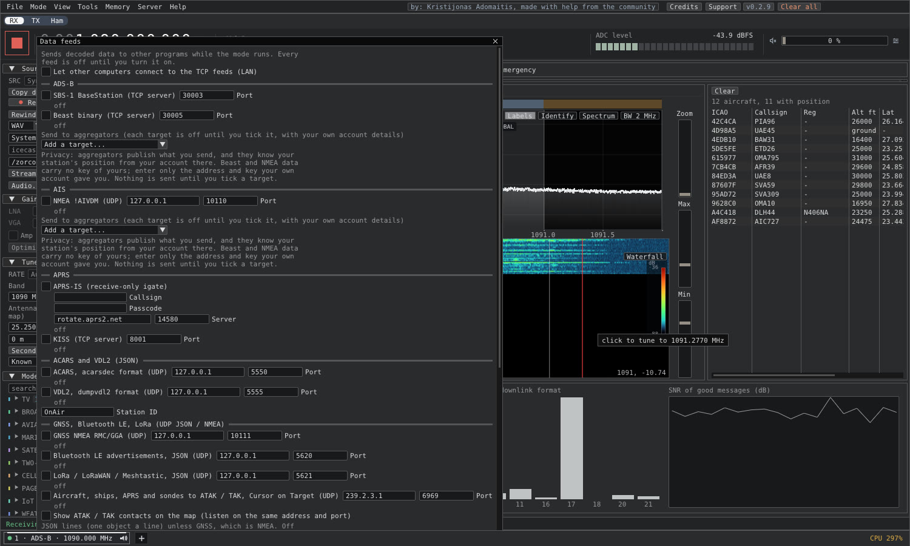

ATAK and Cursor on Target
Share what you receive with your team, and see your team on the map
Eye of SaurCom how-to

EYE OF SAURCOM
STEP 1
Tools > Data feeds: tick the ATAK / TAK Cursor on Target feed

EYE OF SAURCOM
STEP 2
Receive anything with a position: ADS-B, AIS, APRS, sondes

EYE OF SAURCOM
STEP 3
Tick Show ATAK / TAK contacts on the map to see your team
Works offline
Plain UDP on your own network - no cloud, no account
Cursor on Target 2.0 XML